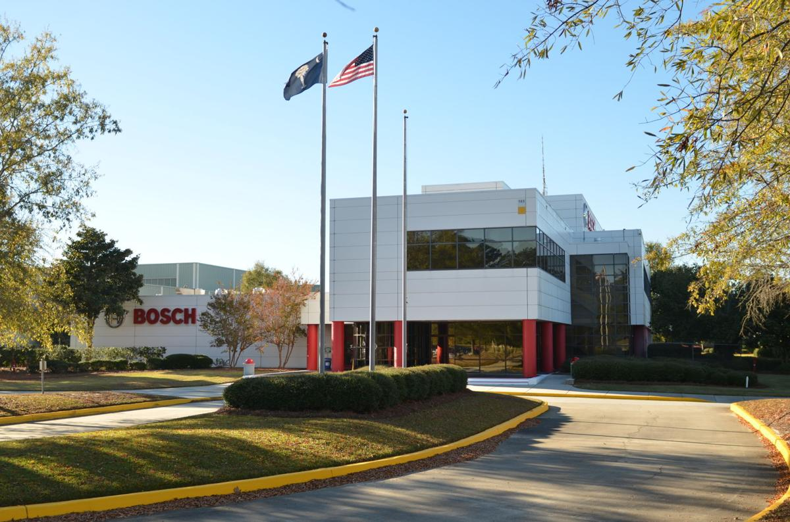
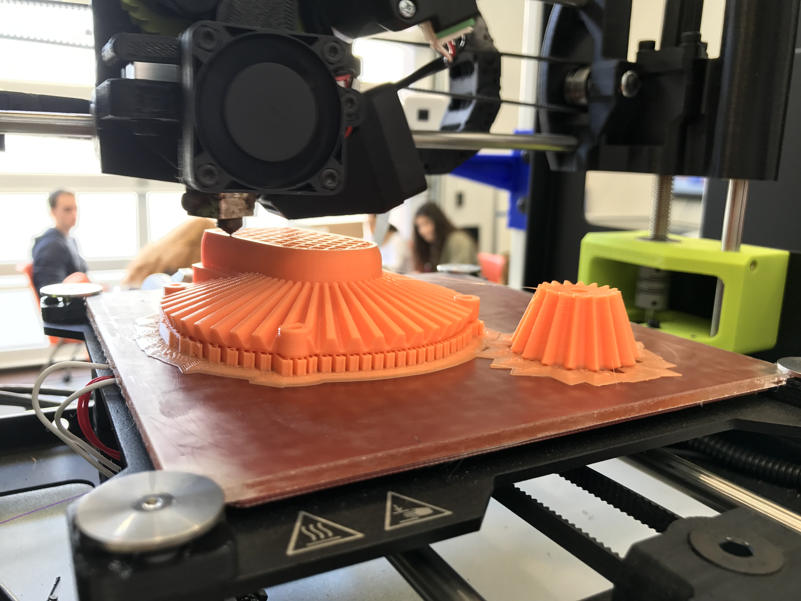

Experiences
Capital One
Technology Development Program
Feb 2021 to present | Richmond, VA
- A two-year rotational program designed for technical learning and professional development

Capital One
Capital One Developer Academy
Aug 2020 to Jan 2021 | Richmond, VA
- Completed a 6-month software engineering training program designed for those without formal education in computer science
- Learned how to build modern web applications using HTML, CSS, and JS
- Developed back-end services using REST and GraphQL architectures, primarily with NodeJS and Express
- Leveraged the Agile workflow when working with teams

Robert Bosch GmbH
Engineering Co-op (2 rotations)
Summer of 2018 & 2019 | Charleston, SC
- Worked on a variety of projects to support the machining and final assembly maintenance technical team of the electronic stability program (ESP) production lines
- Supported mechanics and engineers during maintenance windows, troubleshooting a variety of mechanical and electrical systems
- Developed a web-based system for tracking the location of robot arms and controllers
- Redesigned and built a coolant monitoring system using Arduino
- Created new ways to view and understand data concerning failure of multi-component systems

Clemson Makerspace
Intern
Jan 2018 to May 2018 | Clemson, SC
- Worked 12 hours per week performing task such as machine maintenance, inventory control, equipment management, safety training, and project support
- Guided students as they used 3D printers, laser cutters, and other tools to build a variety of projects
